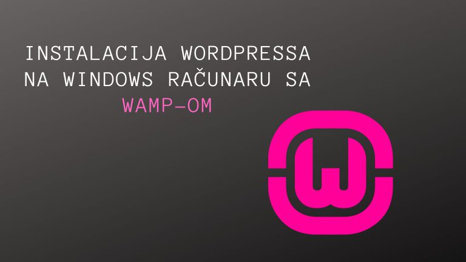

Kako instalirati WordPress na vaš Windows računar koristeći WAMP?

Da li želite da instalirate WordPress na vaš računar? Rad sa WordPressom na računaru omogućava vam testiranje novih WordPress funkcija, da naučite kako da razvijate pomoću WordPressa i napravite web sajtove pre nego što ih prebacite na live server. Ovde ćemo vam pokazati kako pravilno instalirati WordPress na Windows pomoću WAMP-a. Continue reading »